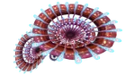
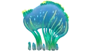
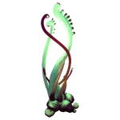
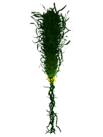

Flore Aquatique
| Flore | Biome | Commentaire |
|---|---|---|
 Champignon acide |
Bancs Calmes Plateaux Herbeux Grottes des Plateaux Herbeux Forêts des Arbres‑Champignons Dunes Grottes des Dunes |
Projette de l'acide quand on utilise un couteau, peut être cueilli ou coupé pour obtenir un spore de champignon acide |
|  Cornet rouge |
Récifs Clairsemés Abysse des Récifs Clairsemés Grottes des Plateaux Herbeux Cavernes des Pèlerins des Mers Grottes des Montagnes |
Décor, donne la graine de Cornet Rouge |
|  Couronne de mer |
Forêt des Pompons Grottes des Plateaux Herbeux Dunes Grottes des Dunes |
Décor, donne la graine de couronne de mer |
|  Herbe fantôme |
Forêts des Algues Sanguines Rivière Perdue Grottes du Champ d'ossements |
Décor, donne la graine d'herbe fantôme |
 Plante tigre |
Plateaux Herbeux Grottes des Plateaux Herbeux Récifs Clairsemés Abysse des Récifs Clairsemés Escarpements rocheux Reefback |
Lance des épines, donne la graine de plante tigre |
|  Vigne d'Orin |
Forêts d'Algues | Donne l'échantillon de vigne d'Orin et la graine de vigne d'Orin |
 Racine de sang |
Forêts des Algues Sanguines Grottes des Algues Sanguines |
Donne l'huile de sang |